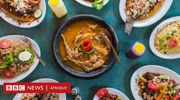

Plus proche des clients
L'expérience nous a apptris qu'il fallait améliorer la relation entre les clients et les personnel restaurant, pas que physiquement mais virtuellement aussi avec une prise en charge améliorée et structure selon les désirs du client


Défis à relever
Nous avons fait un constat général sur les restaurant en ligne: c'est la lenteur de la prise en charge, commande difficile par telephone, manque de visibilté en ligne, gestion de réservations compliquée etc. Cependan rassurez vous ABK CHICKEN est venu remédier à cela en vous apportant un concept différent avec des specialistes du réseau pour vos commandes en ligne soit plus pris au sérieux et une équipe de chefs cuisiniers pour se partager les taches pour les commandes physiques et celles en ligne mais aussi une autre équipe composer de "tiak-tiak" pour les livraisons.